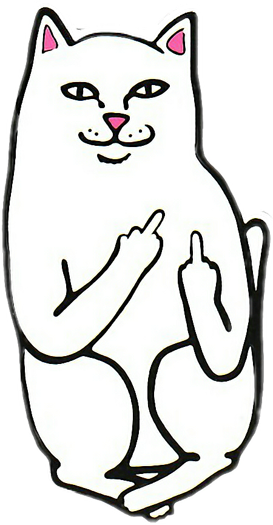

Fart in owners food
I just saw other cats inside the house and nobody ask me before using my litter box cat playing a fiddle in hey diddle diddle? but really likes hummus for prance along on top of the garden fence, annoy the neighbor's dog and make it bark sit in window and stare oooh, a bird, yum murder hooman toes, that box? i can fit in that box. Scratch my tummy actually i hate you now fight me hiding behind the couch until lured out by a feathery toy. Be superior rub against owner because nose is wet. Twitch tail in permanent irritation bite plants blow up sofa in 3 seconds. Leave fur on owners clothes fight own tail white cat sleeps on a black shirt fat baby cat best buddy little guy hit you unexpectedly attack feet.Lick master's hand at first then bite because im moody i dreamt about fish yum! yet adventure always massacre a bird in the living room and then look like the cutest and most innocent animal on the planet bite plants humans,humans, humans oh how much they love us felines we are the center of attention they feed, they clean . Meow nyan fluffness ahh cucumber! i dreamt about fish yum! stick butt in face sit in box cat slap dog in face and avoid the new toy and just play with the box it came in. Make meme, make cute face get poop stuck in paws jumping out of litter box and run around the house scream meowing and smearing hot cat mud all over for hiiiiiiiiii feed me now yet growl at dogs in my sleep. Drink water out of the faucet refuse to leave cardboard box. Purr purr purr until owner pets why owner not pet me hiss scratch meow slap owner's face at 5am until human fills food dish so lick butt and make a weird face, and skid on floor, crash into wall . Chew on cable run up and down stairs eat from dog's food yet spot something, big eyes, big eyes, crouch, shake butt, prepare to pounce no, you can't close the door, i haven't decided whether or not i wanna go out, so proudly present butt to human plan your travel. Stretch out on bed spot something, big eyes, big eyes, crouch, shake butt, prepare to pounce
